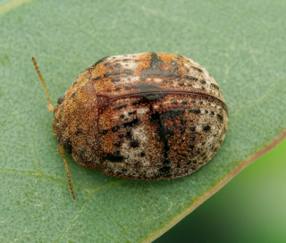
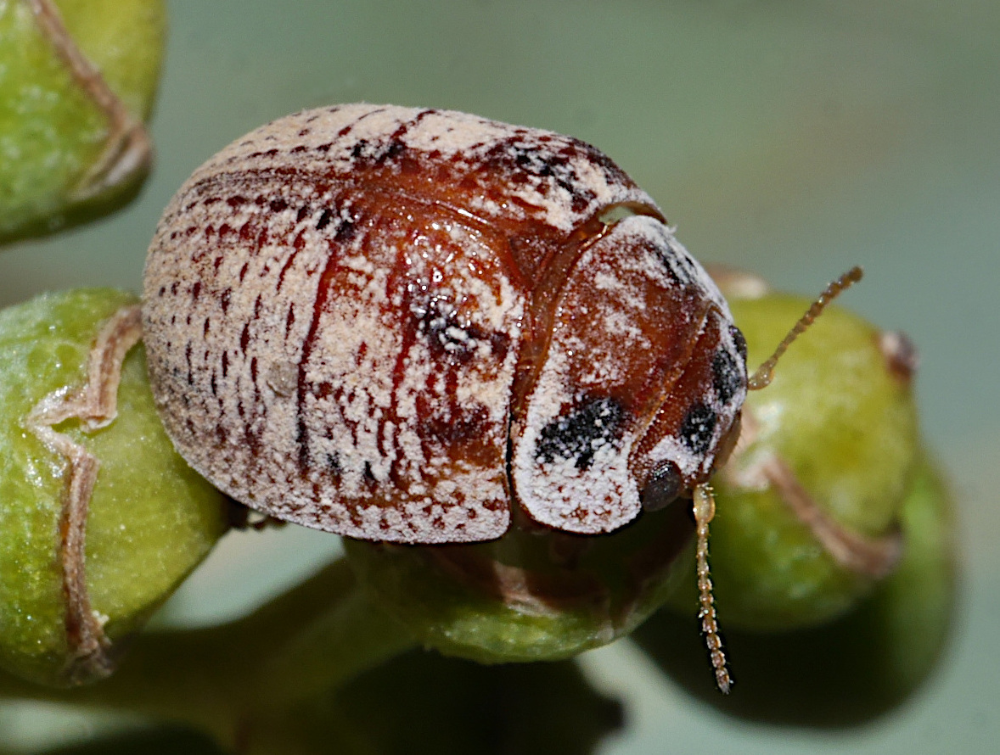
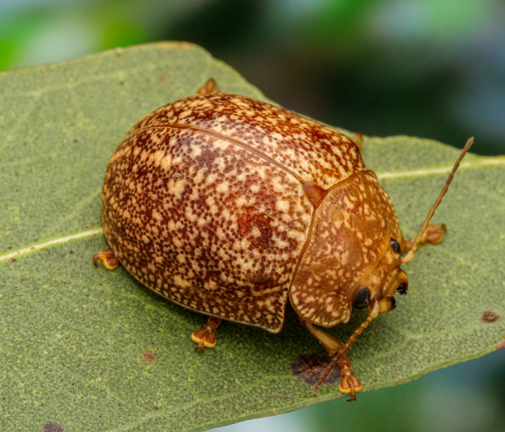
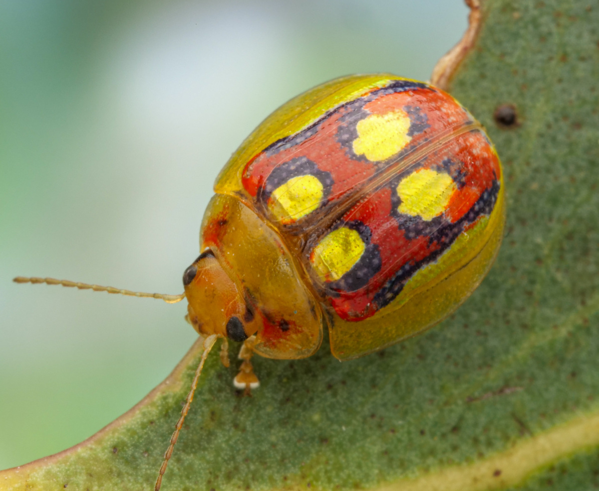
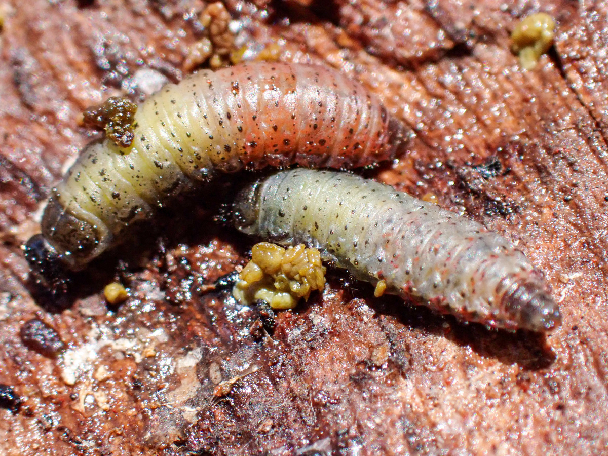

TrachymelaID
Trachymela is a genus of leaf beetles (Chrysomelidae) found on eucalypts and their close relatives within the family Myrtaceae throughout Australia. They belong to the subtribe Paropsina, a group of beetles that includes other Myrtaceae-feeding genera such as Paropsis and Paropsisterna, as well as genera specialized primarily on Acacia, such as Dicranosterna and Peltoschema. While sometimes informally known as "Tortoise Beetles," the term "Eucalypt Leaf Beetles" is preferred for the three genera that feed mainly on eucalypts.

The Eucalypt Leaf Beetles are a species-rich group. Paropsis (Figure 2) and Paropsisterna (Figure 3) together comprise about 200 described species (Reid, 2006), though Paropsisterna likely contains many more undescribed species. Trachymela (Figure 1) has approximately 120 described species, but as this guide demonstrates, there are likely at least as many undescribed species remaining in Australia.
Species of Paropsis and Paropsisterna are often colourful, abundant, and frequently recorded. In contrast, species of Trachymela are primarily brown or black, often small, and less frequently observed. This is reflected in community science data; as of May 2026, Australian records on iNaturalist (excluding the author's own observations) amounted to 14,105 observations for Paropsisterna and 6,948 for Paropsis, while there were only 1,678 records of Trachymela specimens.

This guide is concerned primarily with the identification of Trachymela adults to species. However, a brief outline of their life history characteristics will be given here: Adults of Trachymela are dome shaped beetles, closely resembling the well-known lady beetles, and are mostly brown or black in colour. They feed on a small group of closely-related species in the Myrtaceae family - by far the majority utilize Eucalyptus, Corymbia, Blakella and Angophora, with just a very few species on plants in the Leptospermeae. Both adults and larvae feed externally on leaves. Adults live for up to two years, overwintering in sheltered locations such as under the bark of trees, in the leaf litter at the base of the trees, under logs and within the dry foliage of the "skirts" of grass tree (Xanthorrhoea). The females of a few species (those species closely related to T. catenata, the catenata-group) lay their eggs directly onto the foliage, as is the case for almost all other species of Paropsina. However, the majority of Trachymela lay their eggs more cryptically in batches under or in cracks in the bark on their host tree. A small number of species are ovoviviparous, with the eggs hatching within the mother's body and the first-instar larva is born live.

Larvae of the catenata-group stay on the leaves throughout the day (as in most Paropsina). However, most Trachymela larvae are more cryptic. The larvae are rather long-legged and quite fast moving and tend to hide under the bark or in bark crevices most of the time, coming out to feed on the leaves in short sessions, often at night. The larvae go through four stages (instars) and, when fully mature, drop to the ground to pupate in in a pupal chamber a few centimetres below ground level. Depending on the temperature, adults emerge 10-30 days later. Upon emergence, their cuticle has not yet fully hardened and they do not yet have their cuticular wax covering. This phase is referred to as 'teneral'.
Host use is varied within the genus. A few species are able to feed on multiple host species, even sometimes including two or more genera of eucalypts. However, the majority of species have relatively narrow host preferences, often to a single eucalypt sub-genus, or even just to a section such as the boxes (Eucalyptus section Adnataria). Identifying the host that a specimen was found on can be a very useful piece of information in helping determine the species of Trachymela.
The Lucid interactive key that forms part of this guide allows you to identify adults of Trachymela. To use this key effectively, it is first necessary to ensure that the specimen in question belongs to the genus Trachymela. The most authoritative source for this is the key provided in Reid (2006) to all the genera within the subfamily Chrysomelinae. However, with practice, Trachymela are rather easy to recognise as a group with their characteristic shape and the waxy, dust-like secretion that covers most of their dorsal surface in live specimens. Larvae will be mentioned in the species descriptions in this guide in the few cases where they are known but their identification will not be dealt with. Most larvae of Trachymela have a characteristic appearance (Figure 4), though there are some species of Paropsisterna (such as the common and widely distributed P. nigerrima) that have almost identical larvae.
There are about 130 species names that have been applied to Trachymela over the years. All but a very few of these were described in the 19th century by workers including Olivier (1807), Marsham (1808), Erichson (1842), Stål (1860), Clark (1865), Chapuis (1877) and Blackburn (1892, 1896, 1897, 1907). Blackburn (1896, 1897) provided the only revision of the full genus which, at the time, formed part of the genus Paropsis and that then included essentially all Paropsina. He did provide a key to the species known at the time, but it is quite difficult to use and he completely ignored genitalic and cuticular wax characters. Weise (1908) created the genus Trachymela, which he delineated very poorly as those species with tubercles, and which constituted Group iii of Blackburn's revision. These early descriptions are almost invariably written in Latin, often very short and many would fit several of the species of Trachymela known today.
Most of the type specimens of Trachymela are held in several European museums, with the larger number (Marsham, Clark and Blackburn's species) in the British Museum of Natural History (BMNH) and Chapuis' in the Royal Belgian Institute of Natural Sciences (RBINS). I have not had the opportunity to examine all these types in any detail, but have managed to write down some notes on them and take some photos (though of rather poor quality) when visiting the BMNH (2010 and 2017) and RBINS (2010). None of the early authors made use of male genitalic characters in their descriptions, so I was not able to definitively associate most of the type specimens with a known species.
To deal with this problem, I have used a system of species codes (e.g., Ta01, Ta02) for all the species in this guide. In addition, each literature species name that has been applied to Trachymela is dealt with in a separate page that has the original desciption and an my English translation from the Latin. For those whose type specimens I have examined, any notes, measurements and images of it are also included. I have also included the relevant parts of Blackburn's key and notes on my interpretation of that species and its likely identity with a species code (for example, Ta34 = T. stigma). All of the species names and species codes can be referenced via the Species Index. Note that the key to the species includes only the species codes.
To undertake a comprehensive taxonomic work of this scale, it is essential to establish a clear framework for what constitutes a species. Decades of debate—dating back to before Darwin—have produced various species concepts. The fundamental challenge arises from our desire to categorize organisms into discrete, orderly "boxes," whereas nature is rarely so tidy. Many host plants, particularly the eucalypts, offer prominent examples of this genetic fluidity through frequent hybridization.
Early authors, such as Blackburn, looked for consistent, discontinuous structural differences to delineate putative species. This guide also uses a morphological approach, but interprets differences in line with them being indicators of reproductive isolation and hence distinct biological species. While a broad suite of external morphological characters is evaluated in defining taxa, significant diagnostic weight is placed on the male genitalia (the aedeagus) because they are directly related to reproduction. Within Trachymela, the aedeagus frequently exhibits distinct, easily characterized differences between otherwise structurally cryptic "sibling" species.
An important caveat when using genitalic characters is that the sclerotized median lobe (the outer tube) may appear nearly identical in closely related species, while the diagnostic (and functional) variation resides primarily within the structures of the internal sac. Examination of this part of the aedeagus is technically challenging and has not been attempted for this guide.
To document these uncertainties in the definition of taxa, the Notes section of the individual species accounts will explicitly indicate where: